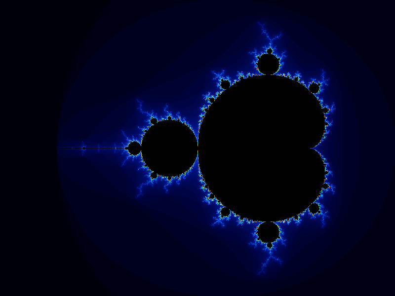

The best way to learn a programming language is to use it: type something, run it, and see what happens. This chapter is a quick tour. We will write four small but real programs. Along the way you will meet most of what Nex has to offer: variables and types, strings and arrays, conditionals and loops, functions, contracts, libraries, files, graphics and concurrency. Each one gets a sentence or two here, just enough to follow the program, and a pointer to the chapter that explains it properly.
You do not need to understand everything in this chapter, and you are not meant to. Read it quickly. Type in the programs and run them. Change something and run them again. If a line puzzles you, note the chapter it points to and move on. From Chapter 2 onwards we start again from the beginning and go slowly, one idea at a time. Long before the end of the book, every line here will be familiar.
Nex comes with a REPL, which stands for Read-Eval-Print Loop. It reads what you type, evaluates it, prints the result, and waits for more. Start it by running nex with no arguments:
$ nex
Nex 0.7.3 — write code that keeps its promises
Type :help for help, :quit to exit
nex>The nex> prompt means the REPL is waiting. Type an expression and press Enter, and the REPL shows its value:
nex> 6 * 7
42
nex> print("Hello, Nex")
"Hello, Nex"
nex> let name := "Ada"
"Ada"
nex> "Hello, " + name
"Hello, Ada"let defines a variable; a value attached to an identifier. Here the identifier is name and the value is the string "Ada". The + operator joins strings together.
Think of the REPL as a laboratory: a place to try things and find out what happens. When something surprises you, that is something to learn. Most of the early chapters of this book happen at the REPL.
Lines that start with a colon are commands to the REPL itself rather than Nex code:
nex> :vars
Defined variables:
• name = "Ada":vars lists the variables you have defined. :clear forgets them all and starts afresh. :help lists every command, and :quit (or Ctrl+D) leaves the REPL.
Sooner or later you will mistype something:
nex> pint("hello")
Error: Undefined function: pintGet into the habit of reading error messages carefully before you change anything. This one is accurate: there is no function called pint. The real cause is a typo for print. The error message is Nex's best attempt to tell you what went wrong, and it is almost always worth reading in full.
Our first program asks for your name and greets you in a language chosen at random: English, Russian, Hindi, Japanese or Greek, each written in its own script. Type each line at the REPL:
nex> let greetings: Array[String] := ["Hello", "Привет", "नमस्ते", "こんにちは", "Γεια σου"]
["Hello", "Привет", "नमस्ते", "こんにちは", "Γεια σου"]
nex> let name: String := console.read_line("What is your name? ")
What is your name? Ada
"Ada"
nex> greetings.get(greetings.length.pick) + ", " + name + "!"
"こんにちは, Ada!"Run the last line a few more times. The greeting changes, because a different language is picked each time. Here is what each line does.
Variables and types. let greetings: Array[String] := ... introduces a variable called greetings. The : Array[String] part is a type annotation: it says that greetings holds an array of strings, and Nex checks that it does. (Type annotations are optional in let, but it's a good habit to always state the type you intended as it serves as documentation and makes the life of the Nex compiler easier). The := symbol is read “becomes”. Every value in Nex has a type, such as Integer, Real, Boolean, String or Array[String]. Chapter 2 covers values, types and variables in detail.
Arrays. The square brackets make an array: an ordered list of values. greetings.length is the number of elements (5), and greetings.get(i) is the element at position i, counting from zero, so greetings.get(0) is "Hello". Arrays are the subject of Chapter 9.
Methods. The dot is how you ask a value to do something. greetings.length asks the array for its length. 5.pick asks the integer 5 for a random whole number from 0 up to, but not including, 5. Put together, greetings.length.pick is a random position in the array, and greetings.get(...) fetches the greeting at that position. Operations reached through a dot are called methods. Nex's built-in types have many of them, and Appendix B lists them all.
Input. console is an object that every Nex program has without declaring it. It stands for the terminal. console.read_line("What is your name? ") shows the prompt, waits for you to type a line and press Enter, and gives back what you typed as a String.
Joining strings. Finally, + glues the pieces together into one string, which the REPL echoes back.
Unicode. Nex strings hold text in any writing system: Cyrillic, Devanagari, Japanese kana, Greek, or emoji. You can type them straight into your program, and they print as they are. Lengths count characters, not bytes, so "こんにちは".length is 5. (Whether they look right depends on your terminal's font, not on Nex.) Chapter 2 says more about strings and characters.
The REPL forgets everything when you quit. To keep a program, save it in a file. This version also takes the name from the command line instead of asking for it. Save it as hello.nex:
-- hello.nex: greet the person named on the command line
-- in a randomly chosen language.
let greetings: Array[String] := ["Hello", "Привет", "नमस्ते", "こんにちは", "Γεια σου"]
if program.arguments.is_empty then
console.print_line("usage: nex hello.nex <name>")
else
let name: String := program.arguments.get(0)
let greeting: String := greetings.get(greetings.length.pick)
console.print_line(greeting + ", " + name + "!")
endRun it by giving nex the file name, followed by the arguments for the program:
$ nex hello.nex Ada
Привет, Ada!
$ nex hello.nex
usage: nex hello.nex <name>A few new things appear here.
Comments. Everything from -- to the end of a line is a comment. Nex ignores it; it is there for human readers. The best comments say why the code does something, or what a piece of it is for. The code itself already says what it does.
Command-line arguments. Just like console, program is an object we get for free. It describes the running program. program.arguments is an Array[String] holding the words that followed the file name on the command line, so in nex hello.nex Ada it is ["Ada"].
Decisions. if ... then ... else ... end runs one block of code or the other, depending on a condition. Here the condition is whether any arguments were given. Without that check, program.arguments.get(0) would fail when there are none. Programs that check their input before using it, and say clearly what they expected, are much more pleasant to use. Chapter 4 covers if and its relatives.
Printing. console.print_line writes its text followed by a new line. You can also use the shorter print anywhere. It shows a value the way the REPL does, so strings come out in quotes, which is handy for checking values but less so for messages meant for people.
When you run a file, Nex type-checks the whole program before running any of it. Mistakes such as adding a number to an array, or calling a method that does not exist, are reported straight away with a line number, before the program does anything. This is one reason the programs in this book write out their type annotations: they tell the checker, and the reader, what each variable is meant to hold.
The same file can be compiled into a standalone program:
$ nex compile jvm hello.nex build/
Compiled /home/ada/hello.nex -> /home/ada/build/hello.jar
Main class: nex.file.hello.__nex.Main
$ java -jar build/hello.jar Grace
नमस्ते, Grace!nex compile jvm translates the program for the Java Virtual Machine (JVM) and packs it, with everything it needs, into a single .jar file. Any machine with Java installed can run that jar; it does not need Nex. (nex hello.nex also runs the compiled form behind the scenes. It just does the compiling for you each time.)
The important point is that there is only one program. You try ideas at the REPL, save them in a .nex file, run it with nex, and compile that same file when you want to ship it. Chapter 23 shows how larger programs are split across several files.
The third program reads a text file and reports how many lines, words and characters it has, and which words appear most often. Save it as word_count.nex:
-- word_count.nex: count the lines, words and characters in a text file,
-- and list its most frequent words.
intern io/Path
intern text/Regex
-- The `top` most frequent words in `counts`, most frequent first.
function most_frequent(counts: Map[String, Integer], top: Integer): Array[String]
require
positive_top: top > 0
do
let by_count: Array[String] := counts.keys.sort(fn (a, b) => counts.get(b) - counts.get(a))
result := []
across by_count as word do
if result.length < top then
result.add(word)
end
end
ensure
at_most_top: result.length <= top
end
if program.arguments.is_empty then
console.print_line("usage: word_count <file>")
else
let file: Path := create Path.make(program.arguments.get(0))
let text: String := file.read_text
let word_pattern: Regex := create Regex.compile("[a-z']+")
let words: Array[String] := word_pattern.find_all(text.to_lower)
let counts: Map[String, Integer] := {}
across words as word do
counts.set(word, counts.try_get(word, 0) + 1)
end
console.print_line("lines: " + text.count(fn (c) => c = #10))
console.print_line("words: " + words.length)
console.print_line("characters: " + text.length)
console.print_line("most frequent:")
across most_frequent(counts, 5) as word do
console.print_line(" " + word + " " + counts.get(word))
end
endGiven a file ozymandias.txt holding Shelley's sonnet, it prints:
$ nex word_count.nex ozymandias.txt
lines: 14
words: 111
characters: 631
most frequent:
and 8
the 7
of 4
on 4
that 4This program is longer, so let us read it from the top.
Libraries. intern io/Path brings in Path, a class from Nex's standard library that stands for a file or folder. intern text/Regex brings in regular expressions. A class describes a kind of object. create Path.make("ozymandias.txt") makes a new Path object, and file.read_text reads the whole file into one string. Appendix C tours the standard library. Chapter 12 shows how to write classes of your own, and Chapter 23 explains intern.
Finding the words. The pattern [a-z']+ matches a run of one or more lowercase letters or apostrophes. find_all collects every match from the lowercased text, which gives the list of words with the spaces and punctuation left behind.
Maps. counts is a Map[String, Integer]: a table from each word to the number of times it has been seen. {} is an empty map. For each word, counts.try_get(word, 0) looks up the count so far, or gives 0 if the word is new. counts.set stores the count plus one. Chapter 10 is about maps.
Loops. across words as word do ... end runs its body once for each element of words, with word naming the current element. Chapter 5 covers loops.
Functions. most_frequent is a function: a named piece of code that takes arguments and gives back a result. Its parameters and its return type are written out in full. Inside it, the special variable result holds the value the function returns. counts.keys.sort(...) sorts the words so that the most frequent come first. The argument to sort, fn (a, b) => counts.get(b) - counts.get(a), is itself a small unnamed function that compares two words by their counts. The line counting newlines (#10 is the newline character) uses the same idea. Functions are introduced in Chapter 6, and functions passed around as values in Chapter 7.
Contracts. The require and ensure clauses are what make Nex distinctive. require positive_top: top > 0 is a precondition: it states what the caller must guarantee, here that it asks for at least one word. ensure at_most_top: result.length <= top is a postcondition: the function's promise about what it gives back. Nex checks both every time the function runs, and if one fails it stops with an error that names the broken clause. Contracts turn assumptions into checked statements. Part V of this book, starting with Chapter 16, is devoted to them.
The last program draws the Mandelbrot set, one of the best-known pictures in mathematics:

mandelbrot.nex.The rule behind the picture is simple. Each pixel stands for a point (x, y). Start with a = b = 0 and repeatedly replace (a, b) with (a² − b² + x, 2ab + y). For some points the numbers stay small forever; those points belong to the set and are painted black. For the rest the numbers eventually grow without bound, and the number of steps they take to escape decides the pixel's colour.
That means hundreds of steps for each of the 480,000 pixels. The program shares this work among several tasks that run at the same time, each computing one horizontal band of the picture. Save it as mandelbrot.nex:
-- mandelbrot.nex: draw the Mandelbrot set, computing bands of rows in
-- parallel, and save the picture as mandelbrot.png.
intern graphics/Picture
intern graphics/Canvas
let width: Integer := 800
let height: Integer := 600
let max_steps: Integer := 200
-- How many steps the point (x, y) takes to escape, up to max_steps.
-- Points that never escape belong to the Mandelbrot set.
function escape_count(x, y: Real): Integer do
let a: Real := 0.0
let b: Real := 0.0
result := 0
from
until
result = max_steps or a * a + b * b > 4.0
do
let next_a: Real := a * a - b * b + x
b := 2.0 * a * b + y
a := next_a
result := result + 1
end
end
-- Escape counts for the rows first_row up to (but not including) last_row,
-- one count per pixel, row after row.
function band(first_row, last_row: Integer): Array[Integer]
require
rows_on_screen: 0 <= first_row and first_row <= last_row and last_row <= height
do
result := []
from
let row: Integer := first_row
until
row = last_row
do
from
let col: Integer := 0
until
col = width
do
let x: Real := -2.5 + 3.5 * col.to_real / width.to_real
let y: Real := -1.3125 + 2.625 * row.to_real / height.to_real
result.add(escape_count(x, y))
col := col + 1
end
row := row + 1
end
ensure
one_count_per_pixel: result.length = (last_row - first_row) * width
end
-- A colour for an escape count: black inside the set, shades of blue
-- and gold outside it.
function color_for(count: Integer): Integer do
if count = max_steps then
result := 0x000000
else
let t: Real := count.to_real / max_steps.to_real
let red: Integer := (9.0 * (1.0 - t) * t * t * t * 255.0).truncate
let green: Integer := (15.0 * (1.0 - t) * (1.0 - t) * t * t * 255.0).truncate
let blue: Integer := (8.5 * (1.0 - t) * (1.0 - t) * (1.0 - t) * t * 255.0).truncate
result := red * 65536 + green * 256 + blue
end
end
-- Start one task per band of rows; they all run at the same time.
let band_count: Integer := 8
let rows_per_band: Integer := height / band_count
let tasks: Array[Task[Array[Integer]]] := []
from
let i: Integer := 0
until
i = band_count
do
let first: Integer := i * rows_per_band
tasks.add(spawn do
result := band(first, first + rows_per_band)
end)
i := i + 1
end
-- Wait for every band, then paint its pixels into a picture.
let picture: Picture := create Picture.make(width, height)
let first_row: Integer := 0
across tasks as task do
let counts: Array[Integer] := task.await
from
let k: Integer := 0
until
k = counts.length
do
picture.set_rgb(k % width, first_row + k / width, color_for(counts.get(k)))
k := k + 1
end
first_row := first_row + rows_per_band
end
picture.save("mandelbrot.png")
console.print_line("saved mandelbrot.png")
-- Show it in a window too, when there is a screen to show it on.
let canvas: Canvas := create Canvas.make(width, height)
if canvas.has_display then
canvas.picture(0.5, 0.5, picture)
canvas.show
canvas.wait_until_closed
endRun it, and after a moment the picture appears in a window and is saved as mandelbrot.png:
$ nex mandelbrot.nex
saved mandelbrot.pngHere is what is new.
Real numbers and loops. escape_count does arithmetic on Real values, which are numbers with a fractional part, such as 4.0. The from ... until ... do ... end loop runs its body until its stopping condition becomes true; here that happens when the point has escaped or max_steps is reached. Notice that result does two jobs: it counts the steps, and its final value is what the function returns. col.to_real converts an Integer to a Real, because Nex never mixes the two silently. Chapter 3 explains expressions and Chapter 5 explains loops.
Another contract. band requires its rows to lie on the screen, and promises one escape count per pixel. If you change the program so that the bands no longer fit the picture, the contract reports the mistake at the call that made it, not as a wrong-looking picture.
Tasks. spawn do ... end starts its body running in the background and immediately gives back a Task. The program starts eight tasks, one per band of 75 rows, without waiting for any of them, so they all compute at the same time on different processor cores. Each task's body sets result to the counts for its band, so each is a Task[Array[Integer]]: a task that will eventually produce an array of integers. task.await waits for that task to finish and gives back its result. The tasks never touch each other's data; each computes its own band and hands it back. That is the simplest and safest way to make a program do several things at once. Chapter 28 covers tasks, and the channels they use to talk to each other.
Graphics. Picture is an image held in memory. set_rgb colours one pixel, with the colour written as a hexadecimal number 0xRRGGBB (color_for builds one from its red, green and blue parts), and save writes the image to a file. Canvas is a drawing surface that can be shown in a window. The program checks has_display first, so it still works on a machine with no screen, such as a server; there it simply saves the file. Both classes are described in Appendix C.
In four short programs we have touched most of the language. Here is where each feature is covered properly:
| Feature | First seen in | Covered in |
|---|---|---|
The REPL, :vars, :clear, :quit |
The REPL | Chapters 2 and 3 |
| Variables, types, strings | Greetings at the REPL | Chapter 2 |
| Expressions and methods | All four | Chapter 3 |
if |
hello.nex |
Chapter 4 |
Loops: across, from ... until |
word_count.nex, mandelbrot.nex |
Chapter 5 |
Functions and fn |
word_count.nex |
Chapters 6 and 7 |
| Arrays and maps | Greetings, word_count.nex |
Chapters 9 and 10 |
Objects and create |
word_count.nex |
Chapter 12 |
Contracts: require, ensure |
word_count.nex, mandelbrot.nex |
Chapters 16–20 |
Files and nex compile, intern |
hello.nex, word_count.nex |
Chapter 23 |
Tasks: spawn, await |
mandelbrot.nex |
Chapter 28 |
Standard library: Path, Regex, Picture, Canvas |
word_count.nex, mandelbrot.nex |
Appendix C |
Above all, remember the working rhythm: try an idea at the REPL, save it in a .nex file, run it with nex, and compile it with nex compile jvm when you want to share it. And when something goes wrong, read the error message first.
These exercises ask you to change the programs in this chapter. Try them even if you are not sure how; guessing, running and reading the error messages is exactly the skill this chapter is about.
1. At the REPL, add two more greetings to the greetings array, in languages you know. (Hint: define the array again with let.) Check its new length, then run the greeting line until you have seen each of your new greetings at least once.
2. Use :vars to see the variables from the greeting program, then :clear and :vars again. What happens if you now type greetings? Read the error message.
3. Change hello.nex so that, when no name is given on the command line, it asks for one with console.read_line instead of printing a usage message.
4. Change hello.nex to greet every name on the command line, each in its own randomly chosen language, so that nex hello.nex Ada Grace Alan prints three greetings. (Hint: across program.arguments as name do ... end.) Then compile it with nex compile jvm and run the jar.
5. Make word_count.nex also print the longest word in the file. What happens when you call most_frequent(counts, 0)? Which part of the program reports the problem?
6.* Make mandelbrot.nex zoom in on part of the picture by changing the four numbers that turn a column and row into x and y. The region from x = −0.755 to −0.735 and y = 0.100 to 0.115, known as Seahorse Valley, is a good place to look. Raise max_steps to 500 to bring out the fine detail. Then, with the zoomed picture, use time nex mandelbrot.nex to compare how long the program takes with band_count set to 1 and set to 8.